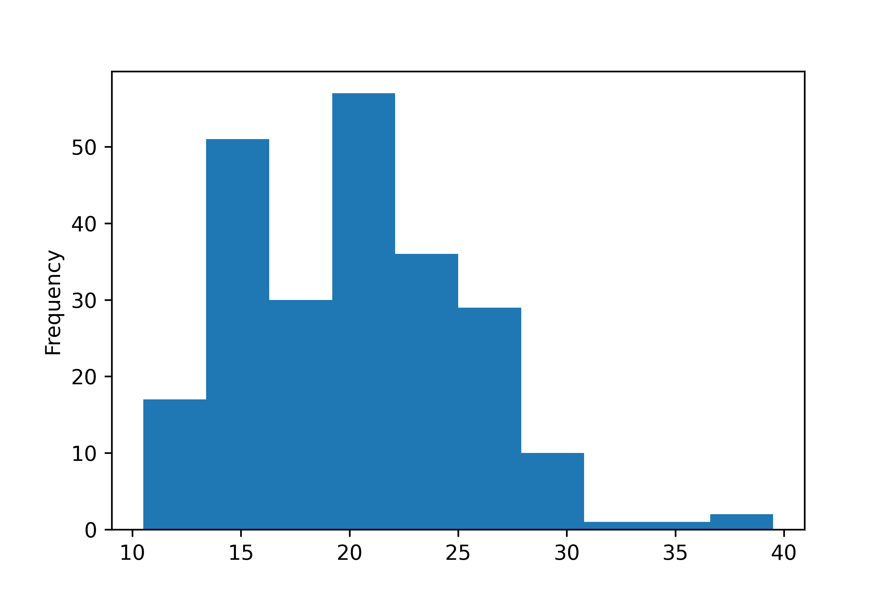
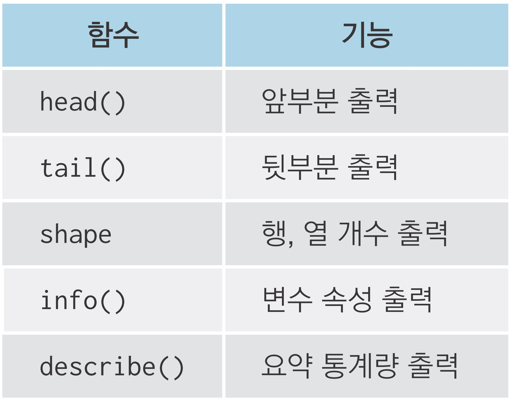
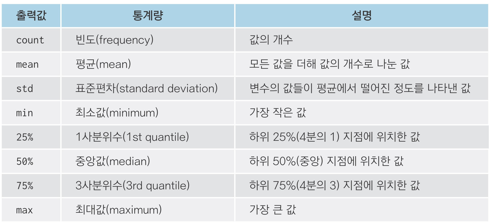
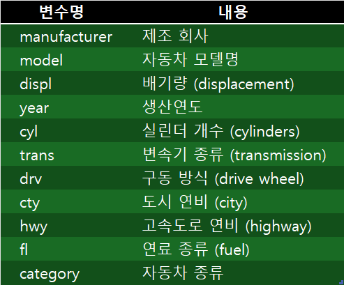
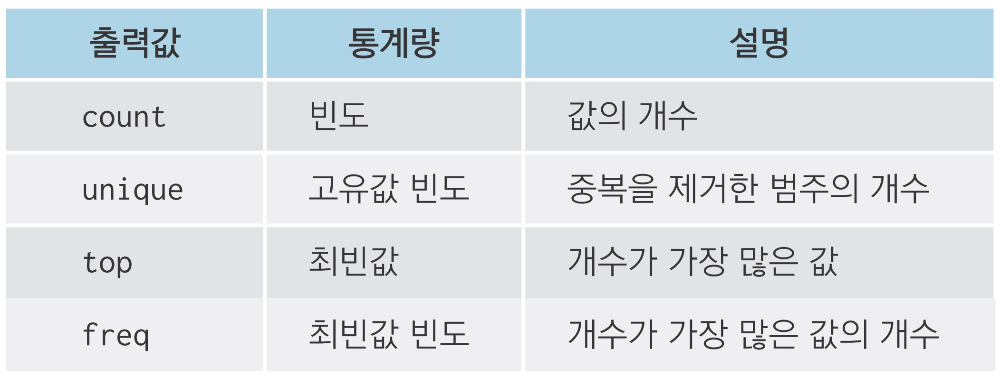
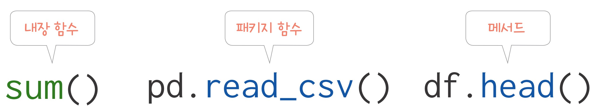
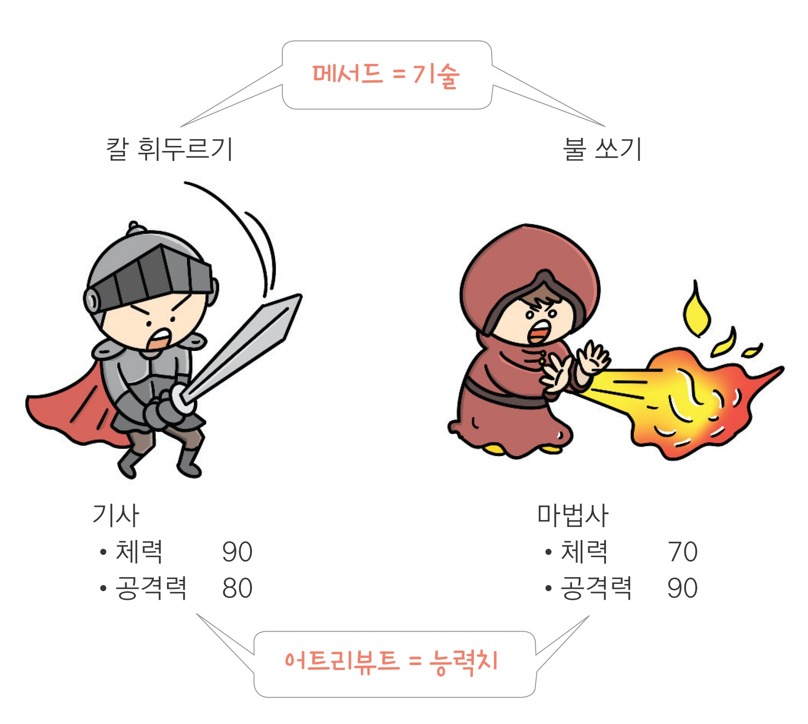

import pandas as pd
exam = pd.read_csv('exam.csv')

05-1 데이터 파악하기(link)
05-2 변수명 바꾸기(link)
05-3 파생변수 만들기(link)

exam 데이터 파악하기head() - 데이터 앞부분 확인하기 id nclass math english science
0 1 1 50 98 50
1 2 1 60 97 60
2 3 1 45 86 78
3 4 1 30 98 58
4 5 2 25 80 65tail() - 데이터 뒷부분 확인하기 id nclass math english science
15 16 4 58 98 65
16 17 5 65 68 98
17 18 5 80 78 90
18 19 5 89 68 87
19 20 5 78 83 58shape - 데이터가 몇 행, 몇 열로 구성되는지 알아보기info() - 변수 속성 파악하기<class 'pandas.core.frame.DataFrame'>
RangeIndex: 20 entries, 0 to 19
Data columns (total 5 columns):
# Column Non-Null Count Dtype
--- ------ -------------- -----
0 id 20 non-null int64
1 nclass 20 non-null int64
2 math 20 non-null int64
3 english 20 non-null int64
4 science 20 non-null int64
dtypes: int64(5)
memory usage: 928.0 bytesNon-Null Count: 결측치(누락된 값)를 제외하고 구한 값의 개수describe() - 요약 통계량 구하기 id nclass math english science
count 20.00000 20.000000 20.000000 20.000000 20.000000
mean 10.50000 3.000000 57.450000 84.900000 59.450000
std 5.91608 1.450953 20.299015 12.875517 25.292968
min 1.00000 1.000000 20.000000 56.000000 12.000000
25% 5.75000 2.000000 45.750000 78.000000 45.000000
50% 10.50000 3.000000 54.000000 86.500000 62.500000
75% 15.25000 4.000000 75.750000 98.000000 78.000000
max 20.00000 5.000000 90.000000 98.000000 98.000000
mpg 데이터 파악하기 manufacturer model displ year cyl trans drv cty hwy fl category
0 audi a4 1.8 1999 4 auto(l5) f 18 29 p compact
1 audi a4 1.8 1999 4 manual(m5) f 21 29 p compact
2 audi a4 2.0 2008 4 manual(m6) f 20 31 p compact
3 audi a4 2.0 2008 4 auto(av) f 21 30 p compact
4 audi a4 2.8 1999 6 auto(l5) f 16 26 p compact manufacturer model displ year cyl ... drv cty hwy fl category
229 volkswagen passat 2.0 2008 4 ... f 19 28 p midsize
230 volkswagen passat 2.0 2008 4 ... f 21 29 p midsize
231 volkswagen passat 2.8 1999 6 ... f 16 26 p midsize
232 volkswagen passat 2.8 1999 6 ... f 18 26 p midsize
233 volkswagen passat 3.6 2008 6 ... f 17 26 p midsize
<class 'pandas.core.frame.DataFrame'>
RangeIndex: 234 entries, 0 to 233
Data columns (total 11 columns):
# Column Non-Null Count Dtype
--- ------ -------------- -----
0 manufacturer 234 non-null object
1 model 234 non-null object
2 displ 234 non-null float64
3 year 234 non-null int64
4 cyl 234 non-null int64
5 trans 234 non-null object
6 drv 234 non-null object
7 cty 234 non-null int64
8 hwy 234 non-null int64
9 fl 234 non-null object
10 category 234 non-null object
dtypes: float64(1), int64(4), object(6)
memory usage: 20.2+ KB displ year cyl cty hwy
count 234.000000 234.000000 234.000000 234.000000 234.000000
mean 3.471795 2003.500000 5.888889 16.858974 23.440171
std 1.291959 4.509646 1.611534 4.255946 5.954643
min 1.600000 1999.000000 4.000000 9.000000 12.000000
25% 2.400000 1999.000000 4.000000 14.000000 18.000000
50% 3.300000 2003.500000 6.000000 17.000000 24.000000
75% 4.600000 2008.000000 8.000000 19.000000 27.000000
max 7.000000 2008.000000 8.000000 35.000000 44.000000 manufacturer model displ ... hwy fl category
count 234 234 234.000000 ... 234.000000 234 234
unique 15 38 NaN ... NaN 5 7
top dodge caravan 2wd NaN ... NaN r suv
freq 37 11 NaN ... NaN 168 62
mean NaN NaN 3.471795 ... 23.440171 NaN NaN
std NaN NaN 1.291959 ... 5.954643 NaN NaN
min NaN NaN 1.600000 ... 12.000000 NaN NaN
25% NaN NaN 2.400000 ... 18.000000 NaN NaN
50% NaN NaN 3.300000 ... 24.000000 NaN NaN
75% NaN NaN 4.600000 ... 27.000000 NaN NaN
max NaN NaN 7.000000 ... 44.000000 NaN NaN

id nclass math english science
0 1 1 50 98 50
1 2 1 60 97 60
2 3 1 45 86 78
3 4 1 30 98 58
4 5 2 25 80 65 id nclass math english science
0 1 1 50 98 50
1 2 1 60 97 60
2 3 1 45 86 78
3 4 1 30 98 58
4 5 2 25 80 65
데이터 프레임을 복사할 때 df.copy()를 사용하는 이유
df_new = df_raw와 같이 작성하면 df_new와 df_raw는 이름만 다를 뿐 한 몸처럼 df.copy() 사용mpg 데이터를 이용해 분석 문제를 해결해 보세요.
mpg 데이터의 변수명은 긴 단어를 짧게 줄인 축약어로 되어 있습니다. cty는 도시 연비, hwy는 고속도로 연비를 의미합니다. 변수명을 이해하기 쉬운 단어로 바꾸려고 합니다.
Q1. mpg 데이터를 불러와 복사본을 만드세요.
Q2. 복사본 데이터를 이용해 cty는 city로, hwy는 highway로 수정하세요.
Q3. 데이터 일부를 출력해 변수명이 바뀌었는지 확인해 보세요. 다음과 같은 결과물이 출력
되어야 합니다.
manufacturer model displ year cyl ... drv city highway fl category
0 audi a4 1.8 1999 4 ... f 18 29 p compact
1 audi a4 1.8 1999 4 ... f 21 29 p compact
2 audi a4 2.0 2008 4 ... f 20 31 p compact
3 audi a4 2.0 2008 4 ... f 21 30 p compact
4 audi a4 2.8 1999 6 ... f 16 26 p compactQ1. mpg 데이터를 불러와 복사본을 만드세요.
Q2. 복사본 데이터를 이용해 cty는 city로, hwy는 highway로 수정하세요.
Q3. 데이터 일부를 출력해 변수명이 바뀌었는지 확인해 보세요. 다음과 같은 결과물이 출력
되어야 합니다.
manufacturer model displ year cyl ... drv city highway fl category
0 audi a4 1.8 1999 4 ... f 18 29 p compact
1 audi a4 1.8 1999 4 ... f 21 29 p compact
2 audi a4 2.0 2008 4 ... f 20 31 p compact
3 audi a4 2.0 2008 4 ... f 21 30 p compact
4 audi a4 2.8 1999 6 ... f 16 26 p compact